9th Grade Science & Health Worksheets
143 Science & Health resources for 9th Grade, ready to print: Verdura, UNESCO, Tundra, Tulio and more. Each resource page shows the grade range, page count and a preview and links straight to the product on TpT.
143 resources
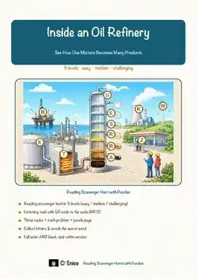
Oil Refinery Reading Comprehension Passages | Chemistry Scavenger Hunt 8-9
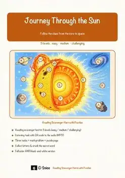
Journey Through the Sun Reading Comprehension | Science Scavenger Hunt 8-9

L'espace – French Reading Comprehension BUNDLE | Space & Astronomy Fiches

Lo spazio – Italian Reading Comprehension BUNDLE | Space Schede

Corpo umano e salute – Italian Reading BUNDLE | Human Body Schede

Le corps humain – French Reading BUNDLE | Human Body & Health Fiches
Verdura – Italian Reading Comprehension Worksheet (Scheda): Cloze & Listening
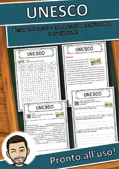
UNESCO – Italian Reading Comprehension Worksheet (Scheda): Cloze & Listening
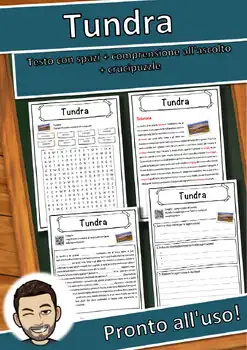
Tundra – Italian Reading Comprehension Worksheet (Scheda): Cloze & Listening
Tulio – Italian Reading Comprehension Worksheet (Scheda): Cloze & Listening
Tetano – Italian Reading Comprehension Worksheet (Scheda): Cloze & Listening
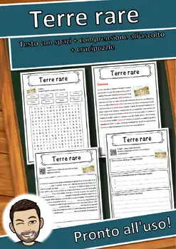
Terre rare – Italian Reading Comprehension Worksheet (Scheda): Cloze & Listening
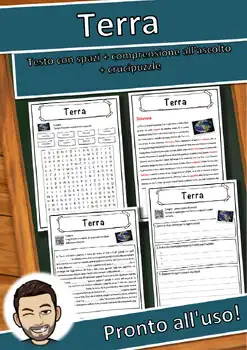
Terra – Italian Reading Comprehension Worksheet (Scheda): Cloze & Listening
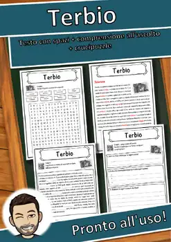
Terbio – Italian Reading Comprehension Worksheet (Scheda): Cloze & Listening
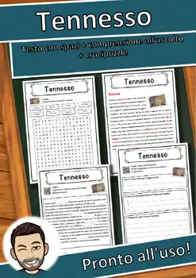
Tennesso – Italian Reading Comprehension Worksheet (Scheda): Cloze & Listening
Tecnezio – Italian Reading Comprehension Worksheet (Scheda): Cloze & Listening

Stagione – Italian Reading Comprehension Worksheet (Scheda): Cloze & Listening

Sole – Italian Reading Comprehension Worksheet (Scheda): Cloze & Listening

Sodio – Italian Reading Comprehension Worksheet (Scheda): Cloze & Listening

Smartphone – Italian Reading Comprehension Worksheet (Scheda): Cloze & Listening

Silicio – Italian Reading Comprehension Worksheet (Scheda): Cloze & Listening

Selenio – Italian Reading Comprehension Worksheet (Scheda): Cloze & Listening

Seaborgio – Italian Reading Comprehension Worksheet (Scheda): Cloze & Listening
Scienza – Italian Reading Comprehension Worksheet (Scheda): Cloze & Listening
Samario – Italian Reading Comprehension Worksheet (Scheda): Cloze & Listening
Salute – Italian Reading Comprehension Worksheet (Scheda): Cloze & Listening

Rubidio – Italian Reading Comprehension Worksheet (Scheda): Cloze & Listening

Rosolia – Italian Reading Comprehension Worksheet (Scheda): Cloze & Listening

Roentgenio – Italian Reading Comprehension Worksheet (Scheda): Cloze & Listening

Rodio – Italian Reading Comprehension Worksheet (Scheda): Cloze & Listening
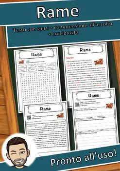
Rame – Italian Reading Comprehension Worksheet (Scheda): Cloze & Listening
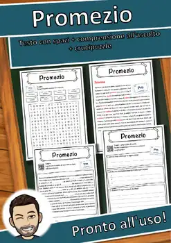
Promezio – Italian Reading Comprehension Worksheet (Scheda): Cloze & Listening
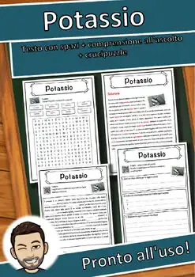
Potassio – Italian Reading Comprehension Worksheet (Scheda): Cloze & Listening
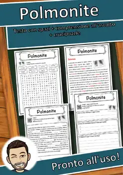
Polmonite – Italian Reading Comprehension Worksheet (Scheda): Cloze & Listening

Polaris – Italian Reading Comprehension Worksheet (Scheda): Cloze & Listening

Planetario – Italian Reading Comprehension Worksheet (Scheda): Cloze & Listening

Pianeta – Italian Reading Comprehension Worksheet (Scheda): Cloze & Listening

Peste – Italian Reading Comprehension Worksheet (Scheda): Cloze & Listening

Pertosse – Italian Reading Comprehension Worksheet (Scheda): Cloze & Listening

Pediatria – Italian Reading Comprehension Worksheet (Scheda): Cloze & Listening

Parotite – Italian Reading Comprehension Worksheet (Scheda): Cloze & Listening
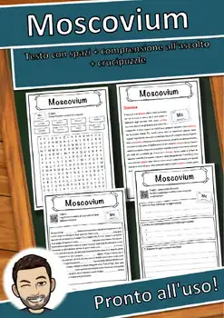
Moscovium – Italian Reading Comprehension Worksheet (Scheda): Cloze & Listening
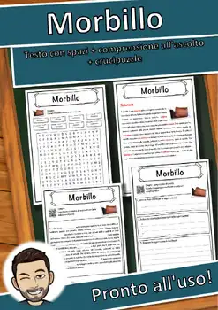
Morbillo – Italian Reading Comprehension Worksheet (Scheda): Cloze & Listening
Metallo – Italian Reading Comprehension Worksheet (Scheda): Cloze & Listening
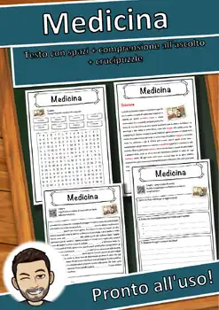
Medicina – Italian Reading Comprehension Worksheet (Scheda): Cloze & Listening
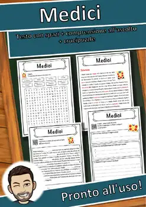
Medici – Italian Reading Comprehension Worksheet (Scheda): Cloze & Listening
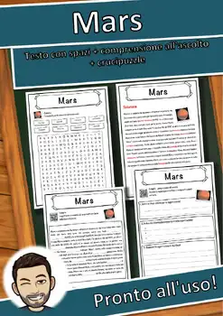
Mars – Italian Reading Comprehension Worksheet (Scheda): Cloze & Listening
Malaria – Italian Reading Comprehension Worksheet (Scheda): Cloze & Listening
No resources found – try a different search term or filter.